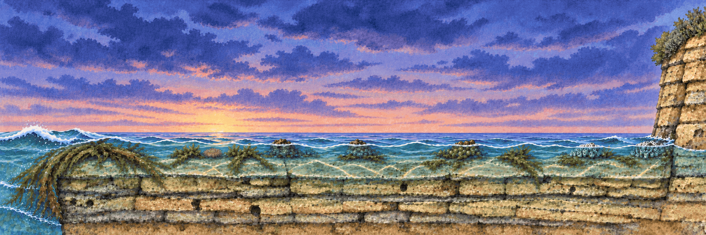
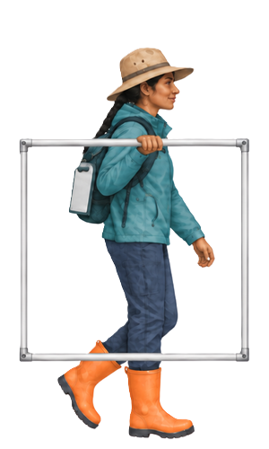
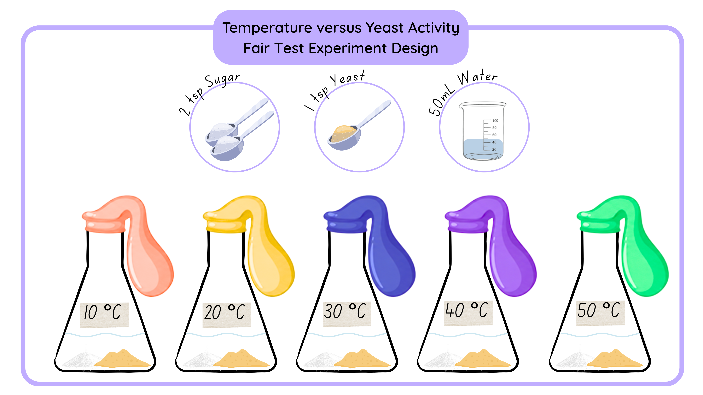

Line Graphs
Line graphs help scientists show how one variable changes continuously as another variable changes, making trends and patterns easier to see.
📄
Download worksheet
Learning objective
We are learning how to construct and interpret a line graph.
Success criteria
- I can describe what the x-axis and y-axis show.
- I can plot points on the graph and connect them with a line.
- I can describe trends or patterns in line graphs.
Think like a scientist
When do scientists use a line graph?
In a line graph, a line connects the points. The line shows how one variable continuously affects another variable.
Victorian Marine Snails
You are a marine biologist. Marine biologists study the animals and plants that live in or near the sea. Today, you are investigating three marine snails that live between the low tide and high tide points on a rock platform. Your first task is to explore how the distribution of each snail changes as you move away from the low tide mark.

Explore the distances
Start at 0 metres. Each labelled point is another 5 metres along the path. What changes as the number gets larger?
Select a point of the number line below then select an animal to start looking for it at that point.
Select a point to look for the animals at that distance.

Step 2 · Count by distance
Choose an animal below, then open each distance panel and click every one you find there — this chart shows how many turned up at each distance.
Completed — next activity unlocked.
0 metres
This is the starting point. Click each animal hiding in the photo:

5 metres
The person is 5 metres from the start. Click each animal hiding in the photo:

10 metres
The person is halfway to 20 metres. Click each animal hiding in the photo:

15 metres
5 metres remain before reaching 20 metres. Click each animal hiding in the photo:

20 metres
This is the furthest labelled point. Click each animal hiding in the photo:

Turn a Data Table into a Line Graph
Testable question
How does the distance from the low tide mark affect the number of elephant snails on the rock platform?
Reasoned prediction
As the distance from the low tide mark increases, the number of elephant snails decreases. Elephant snails are large marine snails and risk drying out, so they prefer being close to the water.
Table 1 · Number of elephant snails
Elephant snails were counted in quadrats up to 5 m from the low tide mark along three separate lines on the rock platform. Calculate the average at each distance before you build the graph.
| Distance from low tide mark (m) | Number of elephant snails | |||
|---|---|---|---|---|
| Line 1 | Line 2 | Line 3 | Average | |
| 1 | 8 | 9 | 13 | — |
| 2 | 5 | 7 | 6 | — |
| 3 | 3 | 2 | 4 | — |
| 4 | 2 | 1 | 0 | — |
| 5 | 0 | 0 | 0 | — |
Drag the correct variable and unit cards onto the dashed spaces on the graph. Remember that a count has no measurement unit.
Average number of elephant snails by distance from the low tide mark
Label the variables and units before plotting the averages.
Interpret the results
Reasoned prediction
As the distance from the low tide mark increases, the number of elephant snails decreases.
Do the results support the reasoned prediction?
Your Turn: Build a Line Graph
Testable question
How does the distance from the low tide mark affect the number of striped conniwinks on the rock platform?
Reasoned prediction
As the distance from the low tide mark increases, the number of striped conniwinks decreases. Striped conniwinks are marine snails and risk drying out, so they prefer being close to the water.
Table 2 · Number of striped conniwinks
Striped conniwinks were counted in quadrats up to 5 m from the low tide mark along three separate lines on the rock platform. Calculate the average at each distance before you build the graph.
| Distance from low tide mark (m) | Number of striped conniwinks | |||
|---|---|---|---|---|
| Line 1 | Line 2 | Line 3 | Average | |
| 1 | 2 | 4 | 0 | — |
| 2 | 4 | 8 | 3 | — |
| 3 | 8 | 8 | 5 | — |
| 4 | 23 | 13 | 12 | — |
| 5 | 13 | 4 | 1 | — |
Drag the correct variable and unit cards onto the dashed spaces on the graph. Remember that a count has no measurement unit.
Average number of striped conniwinks by distance from the low tide mark
Label the variables and units before plotting the averages.
Interpret the results
Reasoned prediction
As the distance from the low tide mark increases, the number of striped conniwinks decreases.
Do the results support the reasoned prediction?
Practise Applying the Principles
Testable question
How does temperature affect yeast activity?
Reasoned prediction
As the temperature increases, the activity of the yeast increases. Living things like warmth, so warmth helps yeast to grow.

Yeast in water feed on sugar and produce carbon dioxide gas as they grow and divide. The gas can be captured in a balloon. The size of the balloon indicates how much gas is produced, and therefore how active the yeast are.
Table 3 · Circumference of the balloon
Five glass containers were set up with the same amount of yeast and sugar in the same volume of water. An identical balloon was fitted to each container. The containers were held at different temperatures, and the circumference of each balloon was measured after 1 hour. The fair test was repeated three times. Calculate the average balloon circumference at each temperature before you build the graph.
| Temperature (°C) | Circumference of the balloon (cm) | |||
|---|---|---|---|---|
| Trial 1 | Trial 2 | Trial 3 | Average | |
| 10 | 7 | 7 | 4 | — |
| 20 | 10 | 11 | 15 | — |
| 30 | 26 | 21 | 25 | — |
| 40 | 21 | 14 | 19 | — |
| 50 | 11 | 5 | 8 | — |
Drag the correct variable and unit cards onto the dashed spaces on the graph. Use the table headings and testable question to decide where they belong.
Average balloon circumference by temperature
Label the variables and units before plotting the averages.
Interpret the results
Reasoned prediction
As the temperature increases, the activity of the yeast increases. Living things like warmth, so warmth helps yeast to grow.
Do the results support the reasoned prediction?
Special Case: Plotting Time on the x-axis
Testable question
What is the effect of water on Stevia plant height?
Reasoned prediction
Increasing the amount of water increases the height of the plant. This is because the plant needs water to expand and grow.
Stevia plant experiment image placeholder
Replace this text with your Canva PNG of the six plants when it is ready.
Special case: the amount of water is the independent variable, but plant height was measured repeatedly over 60 days. To compare both watering conditions throughout the experiment, put time on the x-axis and show the two water amounts as two lines on the same graph.
Table 4 · Plant height with 100 mL water
Plants 1–3 received 100 mL of water twice per week. Calculate the average plant height at each time point.
| Time (days) | Plant height (cm) | |||
|---|---|---|---|---|
| Plant 1 | Plant 2 | Plant 3 | Average | |
| 10 | 0 | 0 | 0 | — |
| 20 | 3 | 1 | 2 | — |
| 30 | 8 | 5 | 5 | — |
| 40 | 12 | 8 | 10 | — |
| 50 | 14 | 11 | 14 | — |
| 60 | 17 | 12 | 16 | — |
Table 5 · Plant height with 300 mL water
Plants 4–6 received 300 mL of water twice per week. Calculate the average plant height at each time point.
| Time (days) | Plant height (cm) | |||
|---|---|---|---|---|
| Plant 4 | Plant 5 | Plant 6 | Average | |
| 10 | 0 | 0 | 0 | — |
| 20 | 4 | 5 | 3 | — |
| 30 | 12 | 11 | 10 | — |
| 40 | 18 | 15 | 15 | — |
| 50 | 25 | 21 | 20 | — |
| 60 | 31 | 28 | 25 | — |
Drag the correct variable and unit cards onto the dashed spaces on the graph. In this special case, think carefully about why time belongs on the x-axis.
Average Stevia plant height over time
Label the variables and units before plotting the two watering conditions.
Interpret the results
Reasoned prediction
Increasing the amount of water increases the height of the plant. This is because the plant needs water to expand and grow.